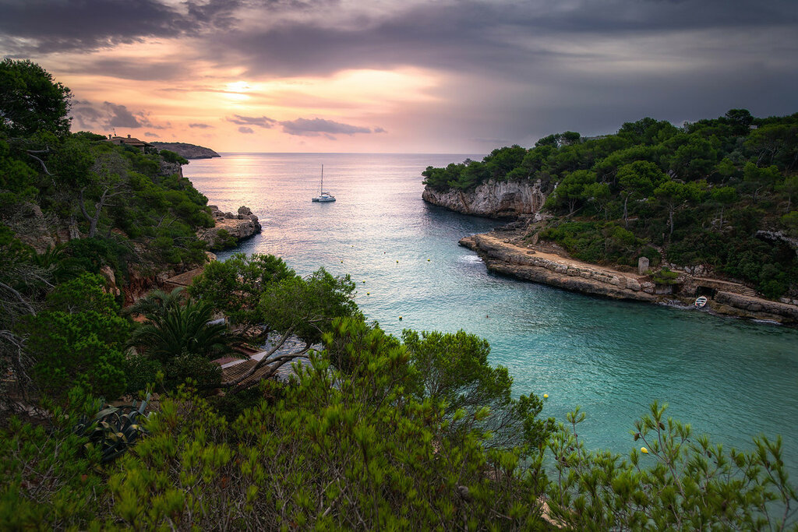

Остров Менорка (исп. - Menorca) является вторым по величине островом в составе Балеарских островов и расположен на северо-востоке архипелага. Его площадь составляет 694,39 км², население 104,6 тыс. человек (в летний период население острова достигает 200 тыс. человек). Остров имеет вытянутую форму с удивительно сочлененным побережьем. На острове Менорка преобладает равнинный рельеф. Максимальная высота - холм Эль Торо (355 м. над у.м.). Побережье острова Менорки представляет собой чередование участков с небольшими скалами, длинными пляжами и бухтами. Административно остров разделен на восемь муниципалитетов. Крупнейший город на острове - его административный центр - город Маон (Mahón), в котором проживает 29 тыс. жителей. В восточной части острова организован природный парк Альбуфера дес Грау (Parque Natural de s'Albufera des Grau), а сам остров с 1993 года объявлен ЮНЕСКО биосферным заповедником.
Остров Ибица (Ивиса, Ibiza) является третьим по площади островом в составе Балеарских островов. Его площадь составляет 571,04 км², а население - 151,7 тыс. жителей (2-й, после Мальорки). Максимальные расстояния острова 41 километр с севера на юг и 15 километров с востока на запад. Остров расположен в юго-западной части архипелага, всего в 75 км к востоку от побережья Пиренейского полуострова. Форма острова вытянута, а побережье довольно четко выражено. На острове Ивиса преобладает равнинный рельеф с плавными формами. Высочайшая точка острова - холм Ла Талайаса (475 м). Административно остров разделен на 6 муниципалитетов, административный центр Ибицы - одноименный город с населением 49,9 тыс. жителей. Ибица пользуется международной известностью благодаря красоте своих бухт и пляжей, а также вечеринкам и дискотекам, которые привлекают множество туристов. Портовая зона Ибицы также привлекает множество туристов своей ночной жизнью.
Остров Форментера (исп. - Formentera) является четвертым по величине островом в составе архипелага. Площадь острова составляет 83,2 км², а население 12,2 тыс. человек. Это самый маленький обитаемый остров на Балеарских островах и самый южный из них. Он расположен в 3,6 км к югу от острова Ивиса. Рельеф острова Форментера равнинный. Высочайшая точка острова - холм Ла Мола (192 м). На острове только один муниципалитет, административным центром которого является город Сан-Франсиско-Хавьер (San Francisco Javier) с населением 3,5 тыс. человек. Длина береговой линии острова, полной пляжей и очень красивых утесов - 69 км. Пляжи острова отличаются своей природной красотой. Пляжи Illetes, Cala Saona и Es Migjorn являются наиболее посещаемыми семьями с детьми.
Остальные острова из группы Балеарских островов являются необитаемыми. Самым крупным из них (пятым по площади среди Балеарских островов) является остров Кабрера (Isla de Cabrera), площадью 15,69 км². С 29 апреля 1991 года остров полностью вошел в состав Национального морского сухопутного парка архипелага Кабрера (Parque nacional marítimo-terrestre del Archipiélago de Cabrera).
